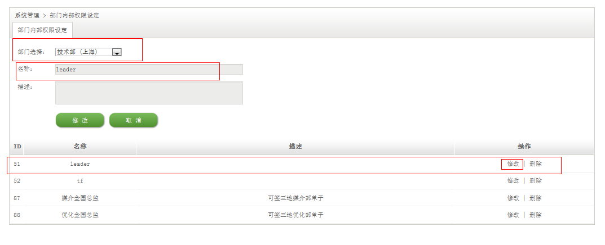

系统管理
部门角色权限编辑
部门角色权限编辑就是为某个部门编辑权限。
新增
点击【系统管理】下面的【部门角色权限编辑】进入部门角色权限设定页面，选择部门、输入权限名称(必填)、描述点击【新增】添加成功。（如下图）
修改
在部门角色权限列表中选择需要修改的权限，点击列后面的【修改】按钮，在列表顶部就会出现该列的部门角色权限设定信息，用户更改信息后点击【修改】完成部门角色权限的设定。点击【取消】退出修改。（如下图）

删除
选择需要删除的部门角色权限列，点击该列后面的【删除】按钮弹出确认框，点击【确定】完成删除，点击【取消】撤销删除。（如下图）

模块角色权限编辑
新增
点击【系统管理】下面的【模块角色权限编辑】选择模块、输入名称（必填）、描述然后点击【新增】按钮添加成功。(如下图）
修改
在模块角色权限列表中选择需要修改的权限，点击列后面的【修改】按钮，在列表顶部就会出现该列的模块角色权限设定信息，用户更改信息后点击【修改】完成模块角色权限的设定。点击【取消】退出修改。（如下图）
删除
选择需要删除的模块角色权限列，点击该列后面的【删除】按钮弹出确认框，点击【确定】完成删除，点击【取消】撤销删除。（如下图）
业务流程管理
部门内部流程设定
部门内部流程就是为部门的内部新增一个流程。
新增
点击【业务流程管理】下面的【部门内部流程设定】进入部门内部流程设定界面，选择部门、输入名称、描述点击【新增】完成部门内部流程的添加。（如下图）
编辑内容
在部门内部流程设定列表中点击需要编辑内容列的【编辑内容】按钮进入模块内容设定页面，输入步骤名称、选择部门角色权限点击【新增】完成步骤的添加。在步骤列表中可以点击【上移】和【下移】按钮上移移动步骤的先后顺序。点击【移除】移除步骤，设置完所有内容后点击【保存】才能够保存前面所操作的内容。（如下图）
修改
在部门内部流程设定列表里面点击需要修改列的【修改】按钮，在列表顶部会出现需要修改列的信息，修改好内容后点击【修改】完成模块流程的修改。点击【取消】退出修改。（如下图）
删除
选择需要删除的部门内部流程设定列，点击该列后面的【删除】按钮弹出确认框，点击【确定】完成删除，点击【取消】撤销删除。（如下图）
角色权限设定
为用户设置权限。
新增
点击【业务流程管理】下面的【角色权限设定】进入用户权限设定页面，选择部门和需要设置权限的员工名称，选择执行段模块（多选）、合同模块（多选）、立项模块（多选）、部门内部权限（多选）点击【保存】完成用户权限的设置。（如下图）
编辑
若用户需要重新编辑员工的权限还是进入【业务流程管理】下面的【角色权限设定】界面，选择部门和需要编辑的员工名称，在执行单、合同模块、立项模块、部门内部权限中如需要去掉某个权限直接去掉多选框的选中状态方可，如需要新加权限选中多选框就行了。设置好后点击【保存】按钮完成权限的编辑。（如下图）
模块流程设定
为某一个模块添加一个执行流程。
新增
点击【业务管理流程】下面的【模块流程设定】进入模块流程设定界面，选择模块、输入名称、描述、选择应用部门点击【新增】模块流程添加成功。（如下图）
编辑内容
在模块流程列表中点击需要编辑内容列的【编辑内容】按钮进入模块内容设定页面，输入步骤名称、选择系统角色权限或者部门角色权限点击【新增】完成步骤的添加。在步骤列表中可以点击【上移】和【下移】按钮上移移动步骤的先后顺序。点击【移除】移除步骤，设置完所有内容后点击【保存】才能够保存前面所操作的内容。（如下图）
修改
在模块流程列表里面点击需要修改列的【修改】按钮，在列表顶部会出现需要修改列的信息，修改好内容后点击【修改】完成模块流程的修改。点击【取消】退出修改。（如下图）
删除
选择需要删除的模块流程列，点击该列后面的【删除】按钮弹出确认框，点击【确定】完成删除，点击【取消】撤销删除。（如下图）
权限继承设定
员工a继承员工b的权限。
添加
点击【业务权限管理】下面的【权限继承设定】进入权限继承设定页面，选择人员的部门和员工名称，选择继承人的部门和员工名称点击【添加】按钮完成权限继承的设定。（如下图）
撤销
在权限继承列表里面选择需要撤销的继承关系，点击该列的【撤销】按钮弹出确认对话框点击【确定】完成撤销操作，点击【取消】放弃撤销。（如下图）